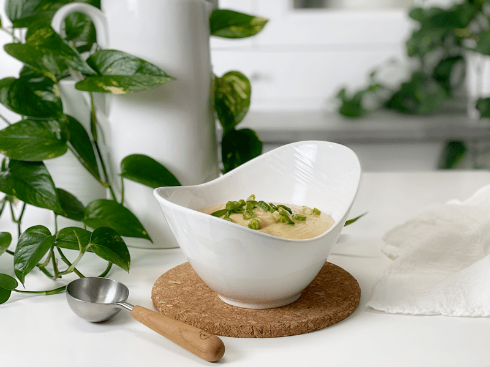
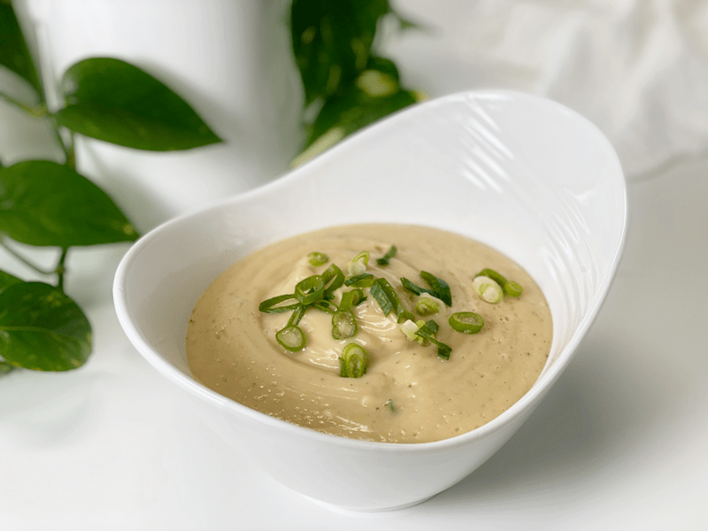
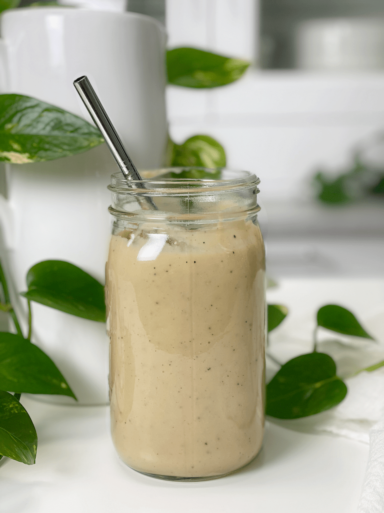

Northern Bean and Cauliflower Gravy | Oil-Free

I was up early today creating recipes. My main focus is to keep Bob and me and well-nourished…the perk is that I get to share with you what goes on our plates. Right now, my diet is focused on whole foods (as always): fresh greens, starches, no sugar, and no added fats. Little does Bob know, but that’s his dietary focus too, since I do all the cooking. He will still snack on some nuts or fruits, but more and more he finds that he thoroughly enjoys all the creative dishes that I come up with.

Anyway, back to this morning…I was in the mood for a thick creamy sauce to drizzle pour (that’s more like it) over our steamed veggies. Truth be told, after taste-testing the sauce, I quickly found myself wanting to drop a straw in that blender carafe and just drink the stuff. In fact, just to be funny, I poured some in a jar, put a straw in it, and snapped a photo to send to a friend. A savory smoothie? Why not? New trends are meant to be discovered.
To Be Noted
I want to point out a few things about this recipe. First off, it makes 5 cups, which may seem excessive, especially if you live alone or just have one other in the household. One benefit of making larger quantities of food is that you can enjoy it in many different ways throughout the week. I prefer this because it saves me time in the kitchen. If you can’t get past the idea that it makes 5 cups, reduce the measurements by half.
I struggled with what to name this recipe… a sauce or a gravy. We have traditional ideas as to what each description means to us. But frankly, this recipe can be used both ways.
How to Enjoy This Recipe
- While warming the sauce, fold in some spinach and cook until the spinach wilts, then toss it with spiralized noodles for a hearty meal. Click (here) to view 16 different root noodle options!
- Use it as a gravy over Mashed Potatoes and Chives or mashed cauliflower.
- Dip your steamed veggies into it or drizzle over the top.
- Spoon some over a bowl of brown rice or beans.

Make Every Bite Count
- If possible, cook the Northern beans from scratch. Click (here) to learn how. They will be more flavorful, have an increase in nutrients, and will be less expensive than canned beans.
- Steam the cauliflower rather than boiling it, to preserve the nutrients.
- When you sit down to enjoy your dinner, do not talk about stressful life events during this time…even if you are alone and are talking to yourself. When we talk about stressful things, it starts to mess with our digestion. If you find yourself doing it out of habit, stop, take a deep breath, and change the topic.
Ingredients
Yields 5 cups
- 1 (15 oz) can or 2 cups cooked Northern beans, drained and rinsed
- 2 cups steamed cauliflower
- 1 cup unsweetened non-dairy milk
- 3/4 cup diced white onion
- 2 large garlic heads, minced
- 1/2 tsp nutmeg
- 1 tsp sea salt
- 1/2 tsp pepper
- 2 Tbsp nutritional yeast
Preparation
Northern Beans
- If you prefer to cook your own beans (which I did), click (here) to learn how.
- Otherwise, open the canned beans, drain, and rinse.
Steam Method for Cauliflower | Stove Top
- If you own an Instant Pot, click (here) to see a super quick and easy way to steam the whole head of cauliflower in one fell swoop.
- Otherwise, wash the cauliflower, remove the core, and cut it into uniform-sized pieces (so they cook evenly.)
- Add about one inch of water to a large pot and bring to a boil.
- Once the water comes to a boil, place the filled steamer basket into the pot, and cover.
- Turn the heat to medium and let steam until fork-tender, roughly 20 to 30 minutes. They must be fully cooked, or the gravy won’t have a creamy texture.
Sautéeing the Onion, Nutmeg, & Garlic
- While cauliflower is steaming, heat 2 tablespoons of water in sauté pan over medium to medium-high heat, add the onions, sprinkle with salt, and cook until soft and lightly browned.
- The salt will help break down the cell walls of the onions so they soften.
- When the onions are translucent, add the nutmeg and minced garlic. Cook for 30 seconds.
- Add more water as it evaporates so the onions don’t stick to the base of the pan and burn.
- Adding the nutmeg now it will help make it more aromatic.
- Be careful not to overcook, as the garlic will turn bitter if burnt.
Assembly
- Using a slotted spoon or a strainer, transfer 2 cups of cooked cauliflower into the blender.
- Add the beans, plant-based milk, sautéed onion mix, salt, pepper, and nutritional yeast. Blend until creamy.
- I used almond milk for my plant-based milk.
- Taste for flavor, adjusting as you see fit.
- If the sauce is too thick for your liking, add a splash more milk (or water) as needed, blend again.
- Keep the remaining sauce or any leftovers in an airtight container in the fridge. It will last 5-7 days. I also froze this gravy; once thawed, I gave it a quick stir and it was just as wonderfully creamy!
- When reheating, add more non-dairy milk to maintain creaminess if needed.

Northern Bean and Cauliflower Gravy Smoothie… because sometimes we just need a sense of humor. haha
© AmieSue.com